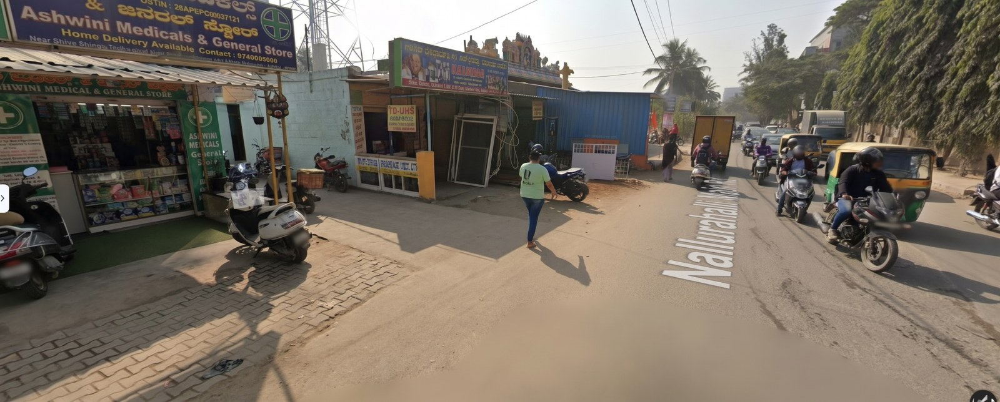
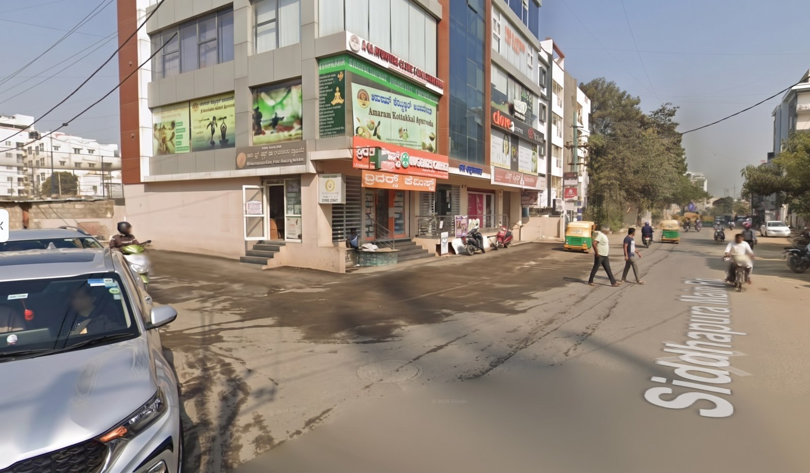
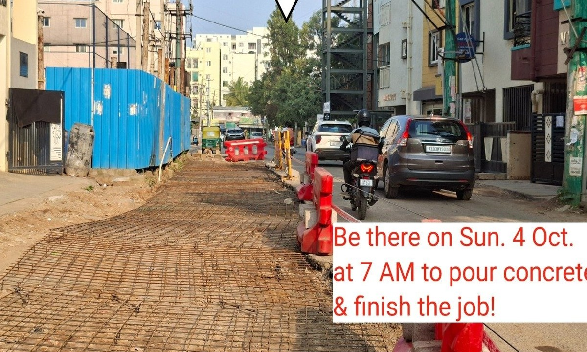
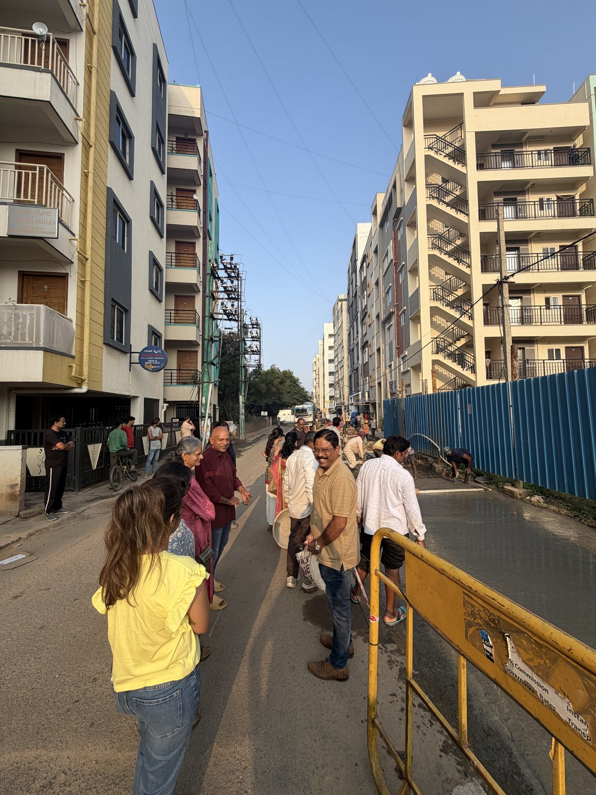
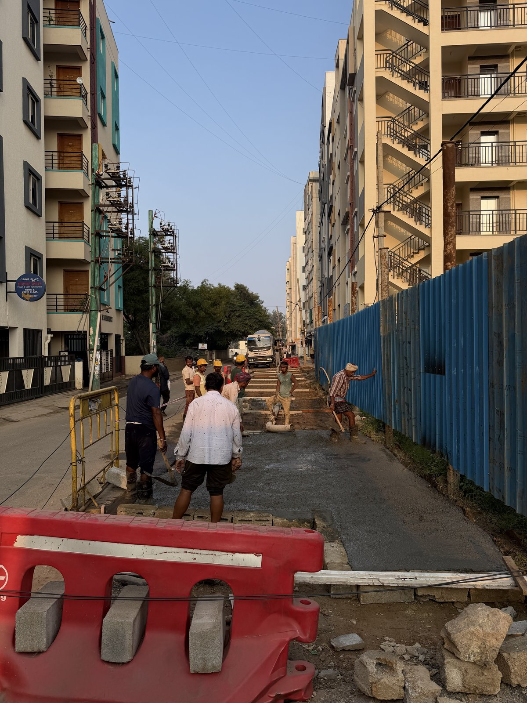
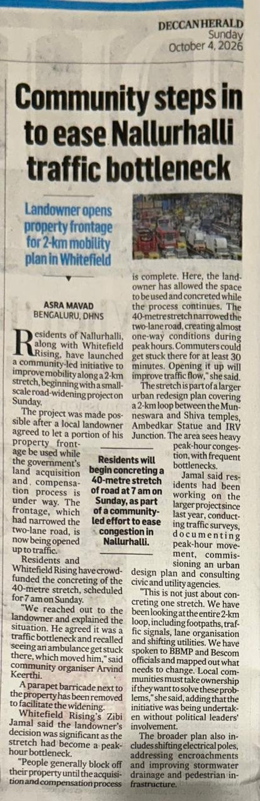
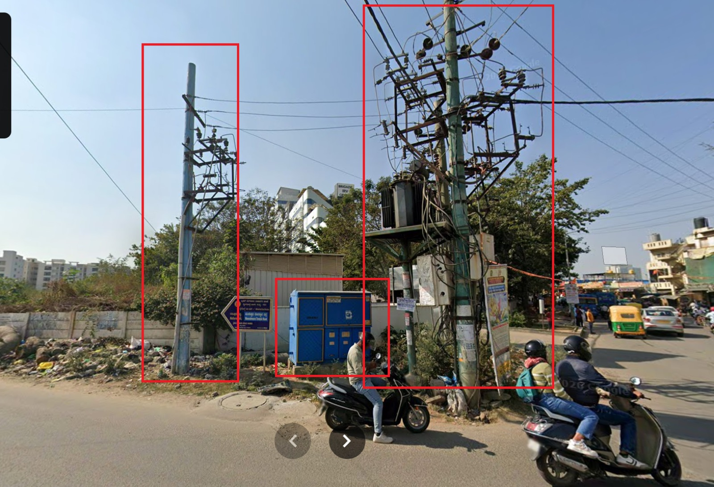
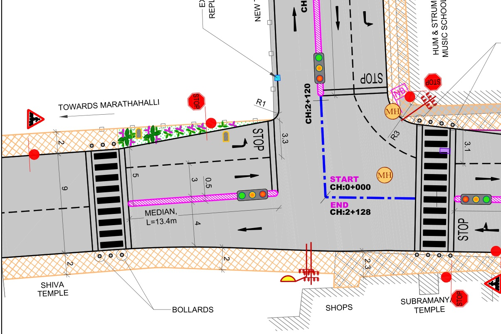
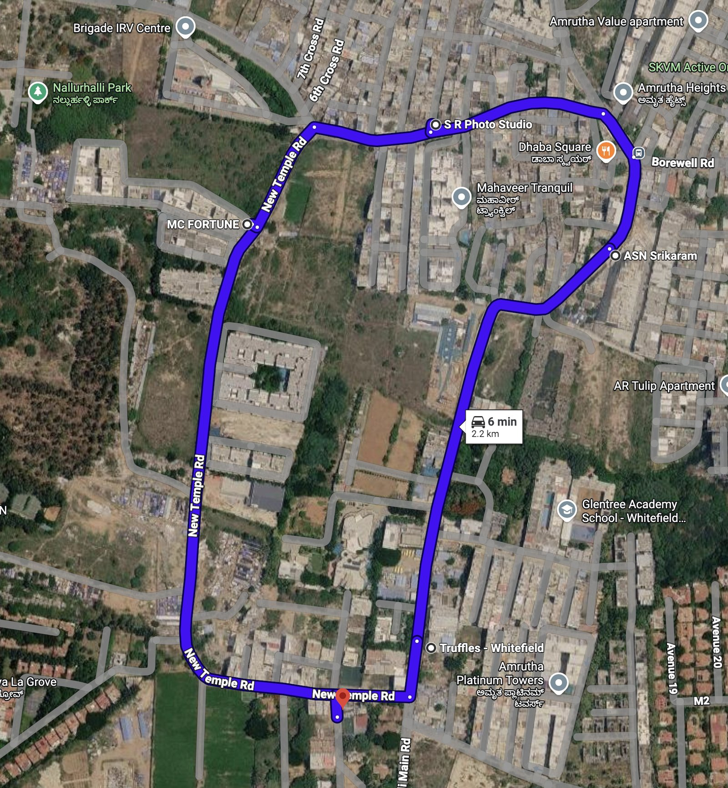

The 2 km Loop: fixing Nallurahalli's choke points
Residents, Whitefield Rising and the Brookefields-Kundalahalli Residents Welfare Trust are clearing the Shiva Temple – Munneswara Temple – Brigade IRV – Ambedkar Statue loop near Nallurhalli Metro.
Free the Shiva Temple Junction
Electric poles stand inside the carriageway at the junction of New Temple Road and Nallurahalli Main Road. Traffic has to swerve around them, and people on foot walk in the road. We will take the cables underground and remove 6 poles.
- Residents petition BESCOMFeb 2026
- BESCOM joint site inspection20 Aug 2026
- GBA letter of support13 Oct 2026
- Design & contractor quote17 Nov 2026
- FundraisingNow
- Final sanction & road-cut permits
- Cables go underground~2 months
- Poles removed, road restored
Two corners, before and after
Drag each slider. The 'after' images show the poles gone. Footpaths and bollards come in Phase 4.

AfterThe junction pole (outside the shops)
A live pole about 3.5 m into the road. Shops and parked bikes fill the space behind it.

AfterThe Bro Chemist corner
A twin-pole structure on the turning corner, carrying both 11 kV and 440 V lines.
What this phase does, and what it doesn't
Included in ₹30.7 L
- ~175 m of 11 kV cable laid underground by directional drilling
- ~190 m of 440 V cable laid underground
- 1 ring main unit (RMU) and 3 feeder pillars, built to BESCOM specification
- 6 poles dismantled and returned to BESCOM
- Footway and road surfaces restored where dug
Comes later
- Footpaths, kerbs and bollards at the corners (Phase 4)
- Turning lanes, medians and signals (Phase 4)
- Brigade IRV and Ambedkar Statue poles (Phase 3)
Budget: ₹30.7 lakh
| Item | ₹ lakh |
|---|---|
| Electrical work Cables, RMU, feeder pillars, drilling, jointing, earthing, pole removal | 23.0 |
| Road restoration / civil work Pavers on the footway (128 m) and RCC on the carriageway (43 m) | 3.0 |
| GST (18%) | 4.7 |
| Total | 30.7 |
- 19 Feb 2026Residents write to BESCOM asking for the cables to go underground.
- 6 Aug 2026Brookefields-Kundalahalli RWT petitions the BESCOM Managing Director.
- 20 Aug 2026BESCOM engineers and residents inspect the junction together. BESCOM agrees the work can be done as resident-funded 'self-execution'.
- 13 Oct 2026GBA (Bengaluru East) Additional Commissioner writes to BESCOM supporting the relocation.
- 15 Oct 2026BESCOM's AEE agrees the junction pole badly affects traffic and commits two linemen to support the work.
- 17 Nov 2026Licensed electrical contractor's quote received. Total project cost: ₹30.7 L.
- 23 Nov 2026 · NowCSR proposal shared with local institutions. Community fundraising under way.
Why are residents paying? Isn't this BESCOM's job?
BESCOM cannot fund the full relocation, but it is contributing towards the cost of the cables. It has also approved 'self-execution': residents fund the rest of the work, and BESCOM supervises it and provides linemen. Waiting for public funding could take years.
Will removing poles end the traffic jam?
Not by itself. The poles are one of several causes. Removing them makes turns smoother and safer, and it clears the road for Phase 4: footpaths, turning lanes and signals.
Is my donation tax-deductible?
Yes. Donations go to Whitefield Rising Trust, which issues 80G receipts. Please share your PAN when you donate so the receipt can be issued.
Who owns and maintains the new cables?
Everything is built to BESCOM specification and handed over to BESCOM, which then owns and maintains it like any other part of its network.
Contribute
Any amount helps. 80G receipt via Whitefield Rising Trust.
Bring your apartment
Be the contact for your society and share the campaign in its groups.
Connect a company
Work at a firm with a CSR budget? Introduce us and we'll send the proposal.
The 40 m Chicken Neck on New Temple Road
For years this 40 m stretch near 15 New Temple Road narrowed to a single lane between compound walls, so opposing cars could not pass. The landowner agreed to let the frontage be used as road while keeping the title, and residents paid for and poured the concrete themselves.

Now: widenedResidents and volunteers concreting the stretch on 4 October 2026.

Bucket line
Levelling & finishing
Deccan Herald- Sep 2026Landowner agrees to public use of the frontage after nearly a year of talks. Crowdfunding begins.
- 4 Oct 2026Steel laid and concrete poured by residents and volunteers.
- ~18 Oct 2026Curing complete. Stretch open to traffic.
Brigade IRV & Ambedkar Statue junctions
BESCOM equipment at these two junctions takes up the footpath, leaves no room to walk, and creates corners that become garbage spots. The plan is to move it out of the public way.

Brigade IRV junction
A ring main unit, two 250 kVA transformers and a spun pole to move into a 60 × 20 ft space inside the Brigade IRV campus. BESCOM has said it will bear this cost.
Waiting on: Brigade's consent for the space
Ambedkar Statue circle
Move the spun pole facing Marigold Apartments to the rear, and remove the double-pole structure facing Union Bank.
Inspected 20 Aug 2026 · funding route not yet set
- 20 Aug 2026BESCOM joint inspection covers both junctions.
- 31 Aug 2026BESCOM prepares an estimate for relocating the equipment.
- 15 Oct 2026BESCOM agrees to pay for moving the IRV equipment and to record why it must move: no footpath, garbage, electrical danger.
- NextBESCOM letter to Brigade, then Brigade's approval of the 60 × 20 ft space.
A walkable, signalled loop
Once the poles are gone, the space they free can be organised: footpaths people can actually walk on, turning lanes, medians, signals and safe crossings. The first detailed design, for the Shiva Temple junction, is ready.

| Package | Who | Est. ₹ lakh |
|---|---|---|
| Turning lanes at Shiva Temple junction (move trees, taper footpath, cover drains) | Residents + GBA, Forest Dept permission | 14.0 |
| Munneswara → Shiva Temple footpath, southern edge | Residents | 19.3 |
| Munneswara → Shiva Temple footpath, northern edge | Residents / GBA | 21.3 |
| Road widening on New Temple Road (21 m plot via TDR) | Landowners + GBA | — |
| One-way loop signage & enforcement | Whitefield Traffic Police | — |
| Storm-water drain slabs & sidewalks | GBA East | — |
Estimates are early planning figures and will change as designs are finalised.
The 2.2 km circulation loop
New Temple Road, 2nd Main, Borewell Road and Nallurahalli Main Road joined as one continuous loop around Nallurhalli Metro.

Where each phase sits on the loop
New Temple Road chicken neck
Phase 1 · Done
Shiva Temple junction
Phase 2 · Fundraising
Brigade IRV junction
Phase 3 · Approvals
Ambedkar Statue circle
Phase 3 · Approvals
Munneswara ↔ Shiva Temple footpaths
Phase 4 · Design
Nallurahalli Main Road (Truffles stretch)
Phase 4 · Design
Who does what
A permanent fix needs residents and civic agencies working together.
| Work | Phase | Responsible | Status |
|---|---|---|---|
| 40 m chicken neck | Residents + landowner | Done | |
| Shiva Temple cables underground | Residents fund · BESCOM supervises | Fundraising | |
| Move IRV equipment inside campus | BESCOM + Brigade | Awaiting consent | |
| Turning lanes & footpaths | Residents + GBA East | Designed | |
| One-way signage & enforcement | Whitefield Traffic Police | Order in progress | |
| Storm-water drain slabs | GBA East | Representation submitted |
Phase 2 needs you
Contribute to the Shiva Temple junction, share this page with your apartment, or volunteer on the ground.
Join the WhatsApp Community